1 Introduction
In this activity, you will learn about and assemble the items in your Living with Cyber kit. By the end of today’s lesson, you should have a working computer and be able to navigate and use it as comfortably as you would your own laptop/computer.
2 Main Components of the Kit
In the backpack, you should find the following components.
- A box labeled with LCD Display
- A clear bag of wires and electrical components
- A box labeled
Libre Computer Board(akaLe Potato) - A box labeled
USB Micro-B Power Supply - A keyboard
- A Mouse
3 Assembly
3.1 Required Components and their Source:
From the box labeled LCD Display you will need the following
- The display
- A bag labeled
3Bthat contains the following: - an HDMI connector
- a USB Type-A and Micro USB conector
- A bag that contains two speakers
- A bag that contains the following:
- a small screwdriver
- two 3D printed legs
- a bag with 4 chrome screws, 4 gold-colored threaded stand offs, and two black screws
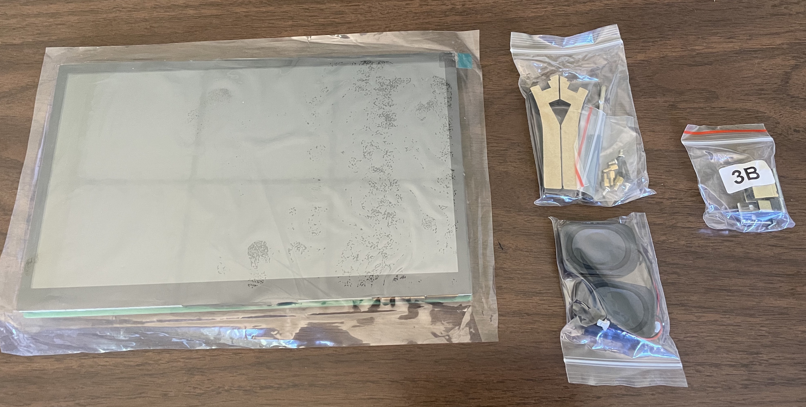
- From the components bag:
- Wifi adapter
- SD Card
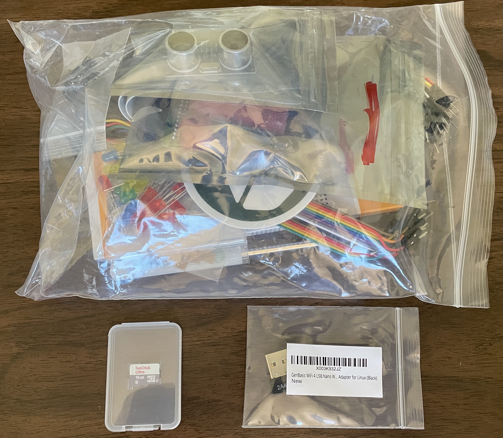
- Le Potato from the box labeled
Libre Computer Board
3.2 Instructions
3.2.1 Attaching the Potato
Flip the screen so that the display is face down. The words
Pineworks Labsshould be face up and easily read.Identify the 4 silver standoffs near the center of the backside of the display. Remove the circular, orange-colored stickers from the tops of each of the four standoffs.
Find the 4 gold-colored threaded standoffs from the bag containing the screw driver. Using your hands, screw the gold colored standoffs into the silver colored standoffs.
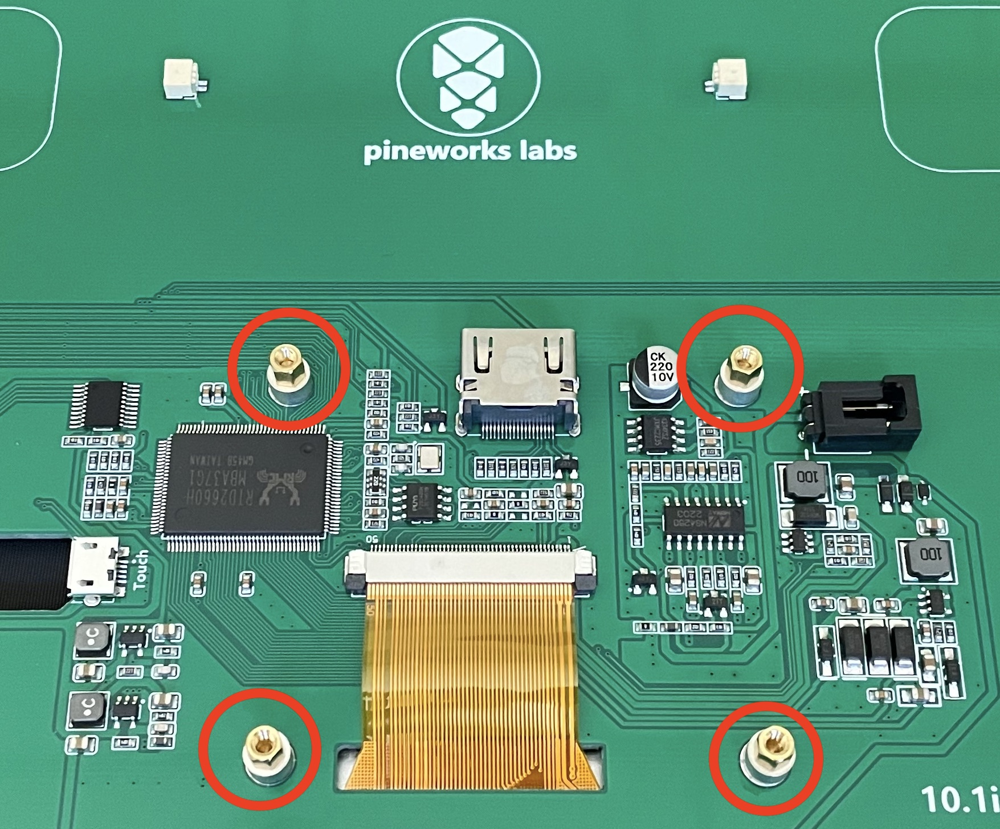
- Place the Potato on top of the stand offs so that the holes align with the stand offs and the hdmi port on the Potato aligns with the hdmi port near the center of the display. Attach the potato to the display with the four silver screws using the screwdriver.
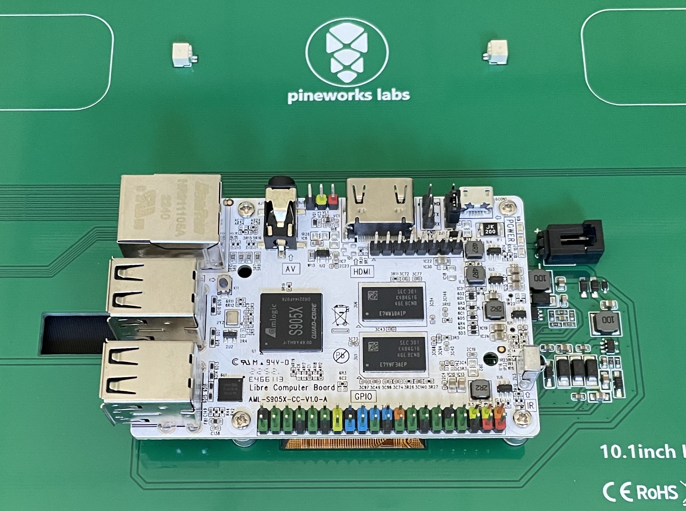
- Attach the HDMI component labeled H-3B and the USB component labeled USB-H 3B
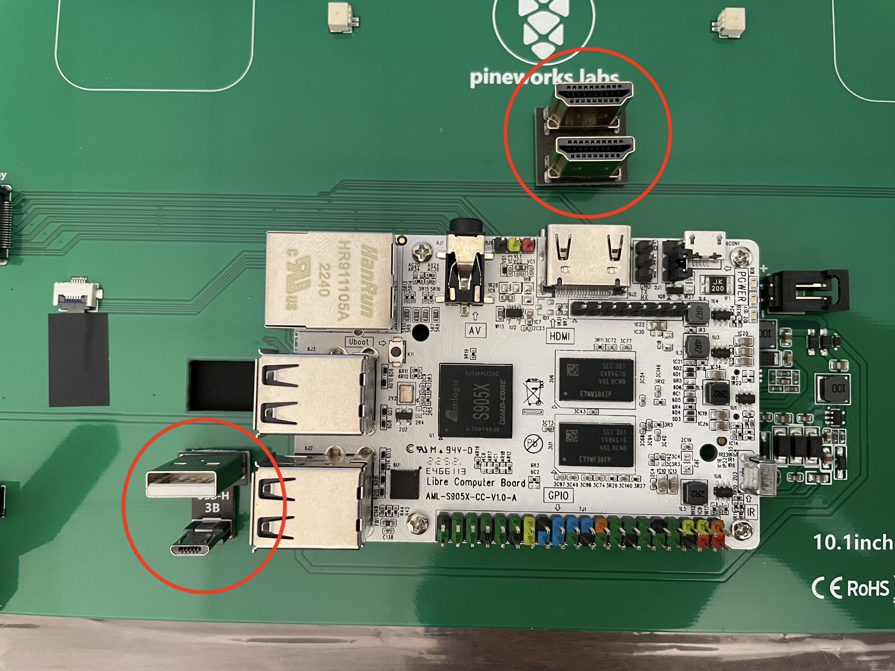
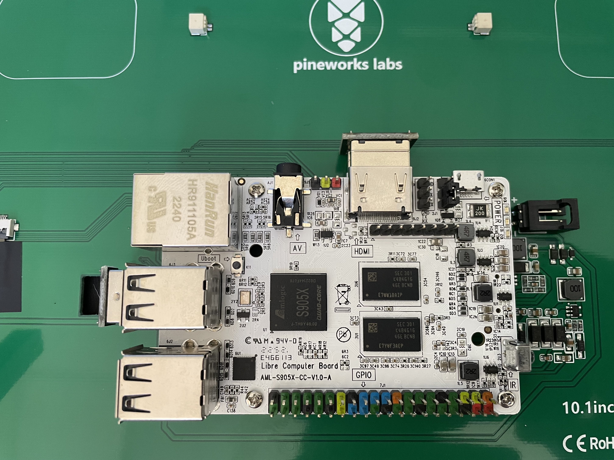
3.2.2 Attaching the Legs
- Attach the display’s legs as pictured using the black screws.
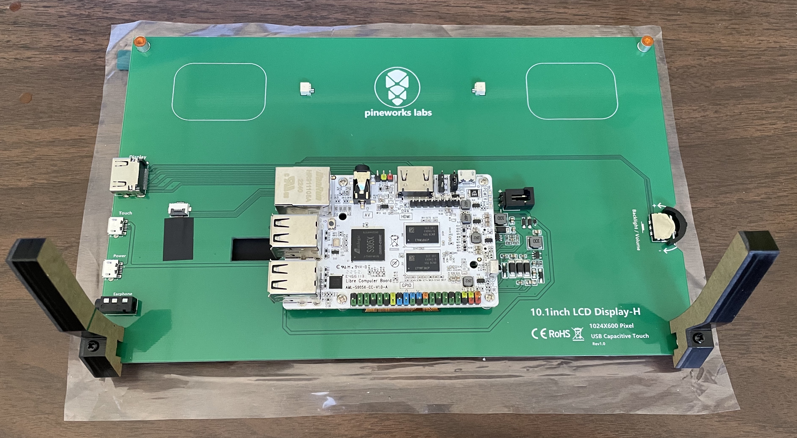
3.2.3 Attaching the Speakers
- Plug the speakers in. Note the wire colors in the image to assist with orientation.
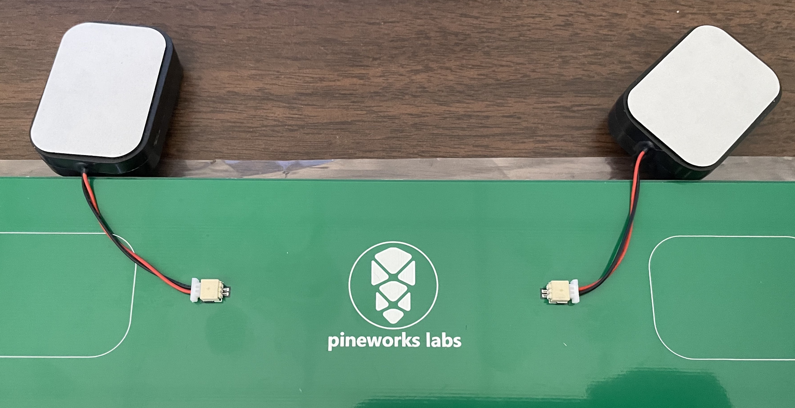
- Remove the paper from the speakers to expose the adhesive areas. Stick the speakers to the pre-outlined areas.
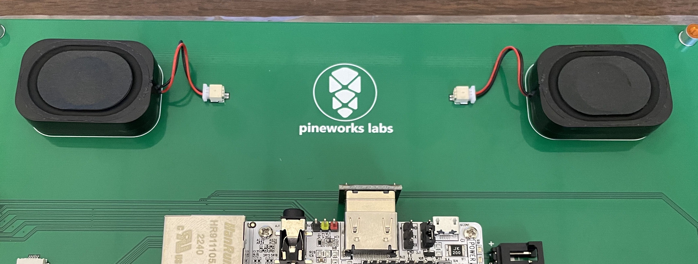
3.2.4 Inserting the SD Card
- Find the SD card from the components bag. Insert the sd card into the sd card slot on the Potato. The slot is on the underside of the Potato and opposite the usb ports.
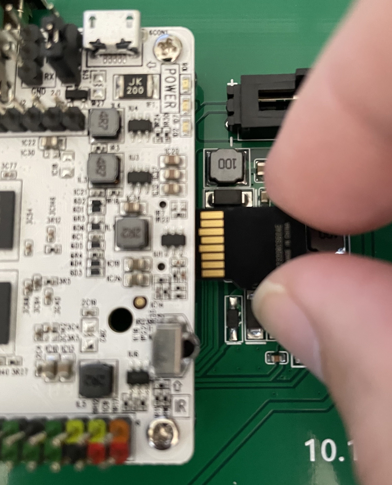
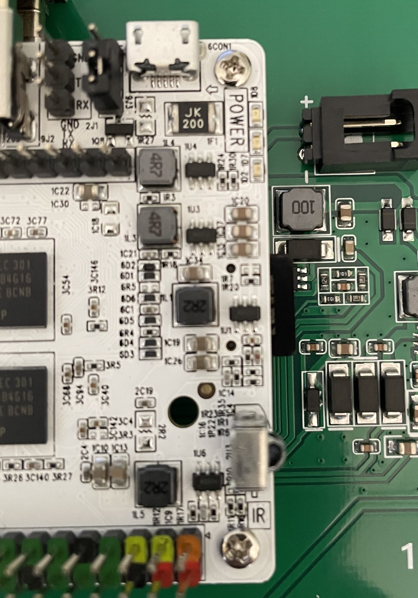
3.2.5 Attaching Peripherals
- Find the wifi dongle in the components bag and insert it into an available usb port
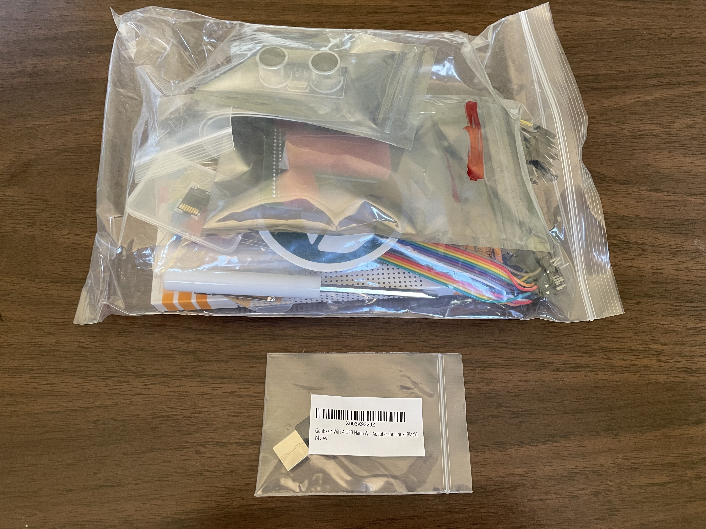
Attach the keyboard and mouse to available USB ports on the Potato.
Attach the power supply to the micro USB port on the display/screen. Plug the power supply into a wall outlet to boot the Potato. Wait about 20-30 seconds and the Potato will be ready.
4 Wifi
Connecting to a typical WPA2 network (like the one you’d find at home) should be a straightforward process. However, connecting to an Enterprise WPA2 network like the one on Louisiana Tech’s campus is a little more involved.
Open a terminal window from the menu bar at the top of the screen by clicking the black icon of a with
>_inside of it.Type the following exactly as shown into the terminal and then hit
Enterto open a file that contains information about the networksudo gedit /etc/wpa_supplicant/wpa_supplicant.confAdd the following to the file below or replacing the existing network configuration. Be sure to replace
abc123andGoDogs!with your Lousiana Tech credentials.network={ ssid="LaTechWPA2" key_mgmt=WPA-EAP identity="abc123" password="GoDogs!" }Save the file and then close it.
Type
rebootinto the terminal and hitEnter
Use the TAB key of your keyboard to autocomplete commands or file names that you are typing into your terminal to save time and avoid any typos/errors.
Feel free to explore on your Potato. Try out different applications and see how similar or different it is from your laptop. Suggestions of applications to look at and try out include:
- Scratch
- Libreoffice Writer
- Libreoffice Calc
- Terminal
- Chromium